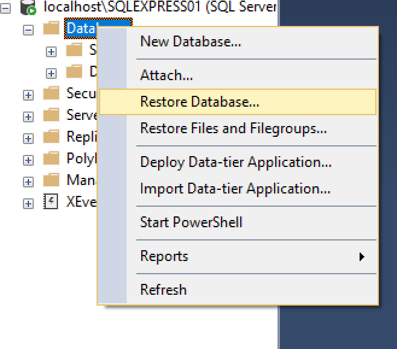
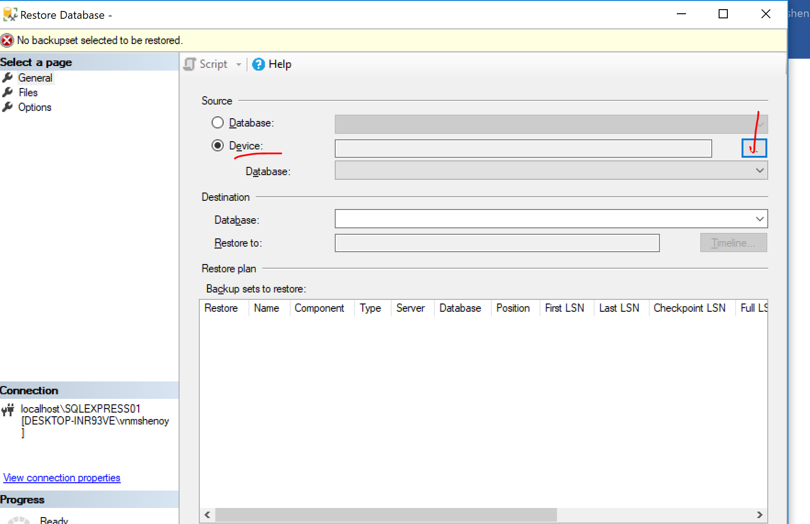
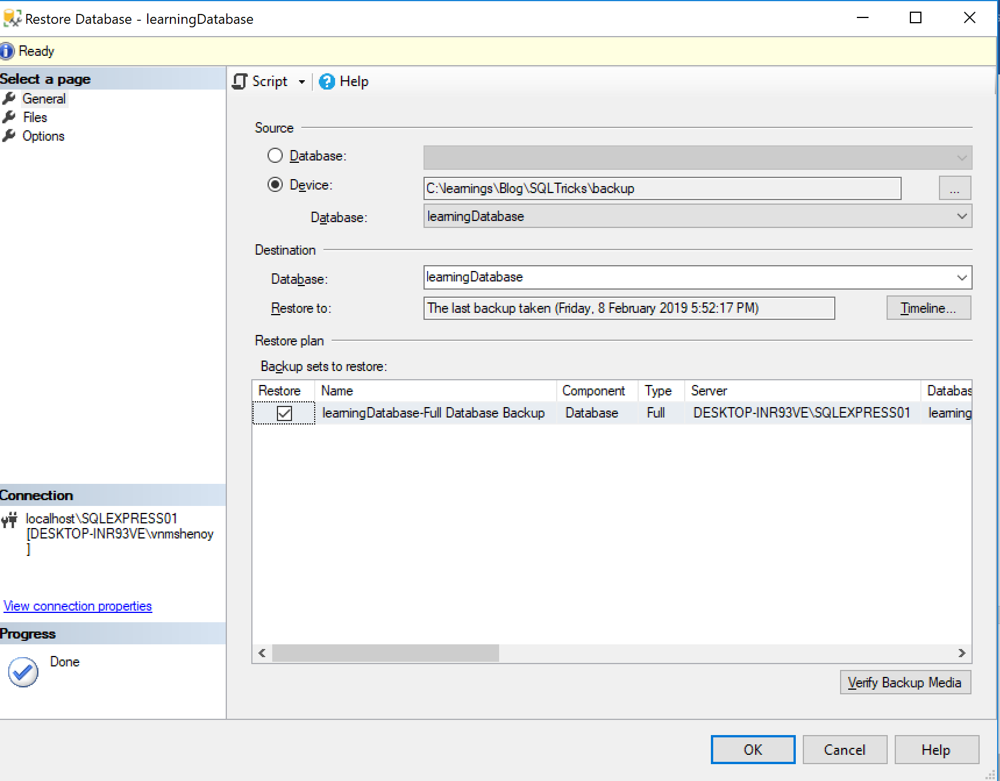

Restore the Database
We created a backup file in the previous section. Using that file,we will try to restore the database. In real time, someone else can share the backup file with you and you can restore it in your SQL server.In order to restore the database,do the following
- Login to the Server using steps we saw earlier(Use Windows authentication)
- Expand the server,and rt click on the "Databases" and select Restore Database
as shown in image below

- The Restore Database screen is very much similar to the Back Up Database screen.In "Source", you should select "Device". Selecting Device allows you to restore directly from a file
- Click on Device and click on the three dots to the right as shown in image

- This will open up “Select Backup Devices”, click on “Add” and navigate to the backup file. In the last "Backup database" section, i saved my "backup.bak" in C$.
- Once you have successfully given the back up file location,Click on OK. and then again Click on OK on "Select Backup devices".If all is good you will see as shown in image below

- Before Importing,you can go and have a look at the "Options" pane on the left.Under options,you will see configurations for restoring database such as "Overwrite the Existing Database" etc.You can select these options based on your need. In my case i will leave them unchecked and click on OK
- Once Restoration is done, SSMS will notify you through a prompt "Database [YourName] restored successfully"
Congratulations... :-) you have restored the database using a backup file